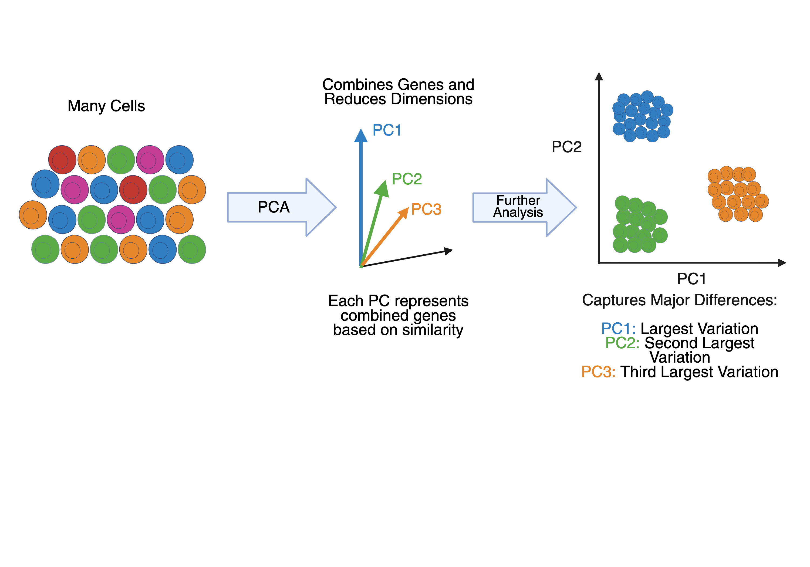
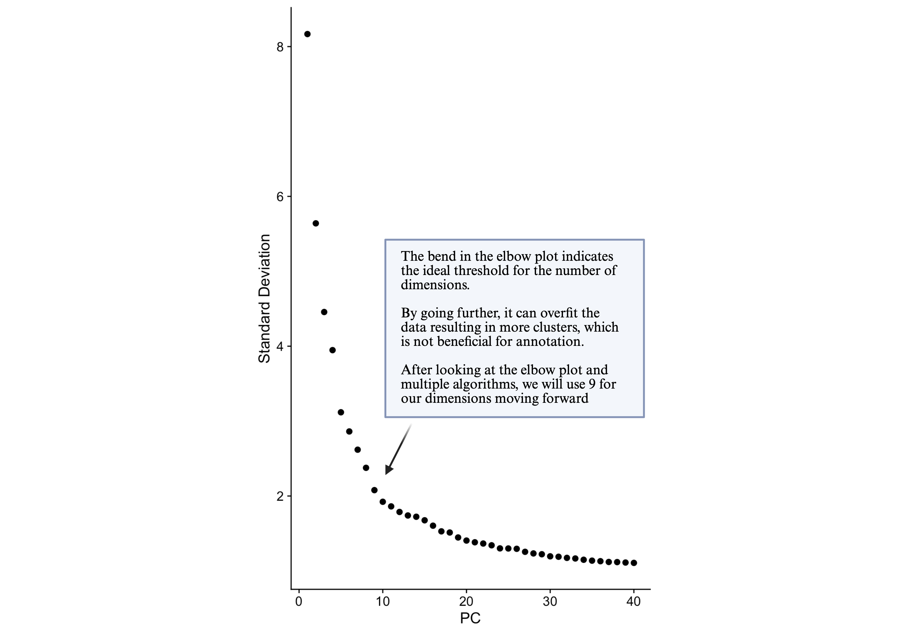
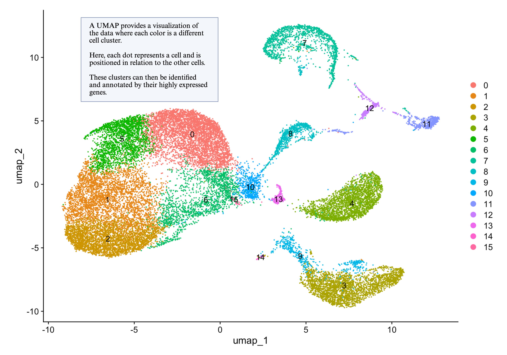

Clustering#
The blood system is a combination of many cell types, in order to determine what broad cell categories are present we need to capture differences and similarities in the RNA expression. By clustering (grouping) cells together we can better capture which cells are present. We will use variable features, principle component analysis, k-nearest neighbors algorithms and plot the results in 2 dimension by UMAP.
FindVariableFeatures() will find the top 2000 genes with most difference between all cells.
Click here to visit the documentation for the Find Variable Features)
selection.method= "vst" : tells Seurat how to calculate which genes are most variable, we are asking it to use variance stabilizing transformation to normalize the genes before starting the analysis.
nfeatures= 2000: tells Seurat how many variable genes to keep, in this case we are keeping 2000 genes.
so <- FindVariableFeatures(so, selection.method = "vst", nfeatures = 2000)
so
Next we use will apply principle component analysis (PCA). To reduce the number of variables we are looking at from the list of 2000 genes.
PCA compresses thousands of gene measurements into a small number of components that capture the main differences between cells. This is done to find groups of similar cells and makes the data set easier to analyze.
PCA continues making smaller groups of genes that continue to differentiate samples using the initial 2000 variable genes.
We use the command RunPCA()
Click here to visit the documentation for RunPCA)
features = VariableFeature() : tells Seurat which variable genes to use for PCA from our command run above.

so <- RunPCA(so, features = VariableFeatures(object = so))
DimHeatmap(so,dims=1, balanced =T)
In this plot we can see the first set of genes from our 2000 that differentiate two groups of cells. Each row is a gene and each column is a cell, with the yellow being highest expression of the gene.
Determining which PCA’s to utilize#
Next we need to determine how many of the 40 principle components we created to use to compare cells further.
We will determine how many PCAs to include in clustering cells through two algorithms and visualizations, the JackStraw and Elbow plots.
JackStraw and Elbow plots evaluate which principal components are significant in the data.
Click here to visit the documentation for JackStraw()
For the Jackstraw() command
Num.replicate = 100 : number of permutations used to estimate significance
Dims = 40 : tests the first 40 PCs
The ScoreJackStraw() command calculates p-values for each PC based on permutation.Click here to visit the documentation for ScoreJackStraw()
The JackstrawPlot() command visualize the results by showing how much each PCA contributes to signifcance by falling off the vertical axis with less significance.Click here to visit the documentation for JackStrawPlot()
If you would like to save the directory to your computer you can set a location for plots with:
plot.dir <- "set location on your computer here"
and use the pdf() command followed by an end to what goes in the pdf dev.off()
Click here to visit the documentation for R’s pdf() command
so <- JackStraw(so, num.replicate = 100, dims=40) ##running now
so <- ScoreJackStraw(so, dims = 1:40)
JackStrawPlot(so, dims=1:40)
plot.dir <- "set location on your computer here"
pdf(paste(plot.dir, "JackStraw_v1.pdf"))
JackStrawPlot(so, dims=1:40)
dev.off()
We can also use an Elbow plot to see how much each PCA contributes to differentiating cell types.
In this plot the x-axis is the PCA and the y-axis shows contributions to significantly differentiating cells types, and we try to find the elbow (like the bend in your arm)

ndims = 40 : tests the first 40 PCs.
ElbowPlot(so, ndims = 40)
Save this plot as a pdf() in plot.dir.
pdf(paste(plot.dir, "ElbowPlot_v1.pdf"))
ElbowPlot(so, ndims=40)
dev.off()
This plot is a ranking of principle components based on the percentage of variance explained by each one. We can observe an elbow around PC9, suggesting that the a strong signal is found in the first 9 PCs.
There are also tools that other programmers have developed that use many mathematical statistical models to
determine how many PCAs to include in clustering cells by summarizing many gene expressions into a few principal components.
findPC() is a command created by Haotian Zhuang, et al to compare different methods of estimating the best principle component numbers to use.
You can use the "" option to pick a model as seen below we try the piecewise linear model, but you can also run all models and see the most selected PCA number.
Click here to visit the documentation for findPC()
install.packages("findPC")
library("findPC")
findPC(sdev = so@reductions$pca@stdev, number = 40, "piecewise linear model", aggregate = NULL, figure = TRUE)
findPC(sdev = so@reductions$pca@stdev, number = 40, "all", aggregate = NULL, figure = FALSE)
After looking at the elbow plot and multiple algorithms, we will use 9 as our dimensions moving forward.
Determining similar cells and clustering#
To begin comparing each cell and creating groups of similar ones (clusters), we begin with the command FindNeighbors().
Click here to visit the documentation for FindNeighbors()
Think of this like building a social network of cells. Each cell is compared to others based on gene expression, and cells that are the most similar become “neighbors.”
Briefly, these methods embed cells in a graph structure and then attempt to partition the graph and cells into highly interconnected ‘communities’.
for the dim option we will want to use 1 through the number we selected. From our data, we chose the number 9.
For the FindClusters() command it will use the neighbors and determine groups of cells that are similar resolution is a value to determine how much to separate cells into different clusters, the higher the number the more groups you will get.
Click here to visit the documentation for FindClusters()
so <- FindNeighbors(object = so, dim=1:9)
so <- FindClusters(object = so, resolution = 0.5)
so
In order for us to see the groups, we use a Uniform Manifold Approximation and Projection (UMAP).
This is a way to take very complicated data with many measurements and compress it into a 2-D plot so we can see patterns and groups.

Click here to visit the documentation for RunUMAP()These ‘communities’ are then run in the
Dimplot() command in order to visualize the clusters.
Click here to visit the documentation for DimPlot()
Because your pca data is still in the seurat object we will choose which to plot with the reduction= option. "pca" or "umap"
so <- RunUMAP(so, dims = 1:9)
DimPlot(so, reduction = "umap")
pdf(paste(plot.dir,"microfluidics_pediatricblood_filtered_dim9_UMAP.pdf", sep = ""))
DimPlot(so, reduction = "umap")
dev.off()
We can also test to see if cells from different samples group together, if we are looking a biological versus technical difference, we expect to see groups with many samples within it.
We will make a column in our metadata called samp to extract the sample names, with the regular expression command gsub to grab everything after a - in the cell IDs.
To create a column we will use the base R syntax $ combined with the new name and <-
so$samp <- gsub('.*-',"",colnames(so))
Now you can view your metadata to look at the new column you made.
View(so@meta.data)
Then, we will use the group.by option in DimPlot to color not by cluster number but by sample.
DimPlot(so, reduction = "umap", group.by = "samp")
We can then save our new seurat structure with all the PCA, umap and sample information to our computers.
What would the code be to create a umap using the Dimplot command clustered by orig.ident column in the meta.data?
DimPlot(so, reduction = “umap”, group.by = “orig.ident”)
To save your object now that you have added all these additional levels of analysis, we will use R’s saveRDS() command, which saves any data object as an R object for future loading.
Click here to visit a public blog on using saveRDS()
saveRDS(so, file=paste(data.dir,"tutorial_microfluidics_pediatricblood_filtered_UMAP9_v1.rds", sep = ""))
This Tutorial was created by the WiseLab of Salve Regina University through the support of the Matt Larson Foundation and the NIH Career Development Award through the Rhode Island - INBRE. To learn more about the Matt Larson Foundation